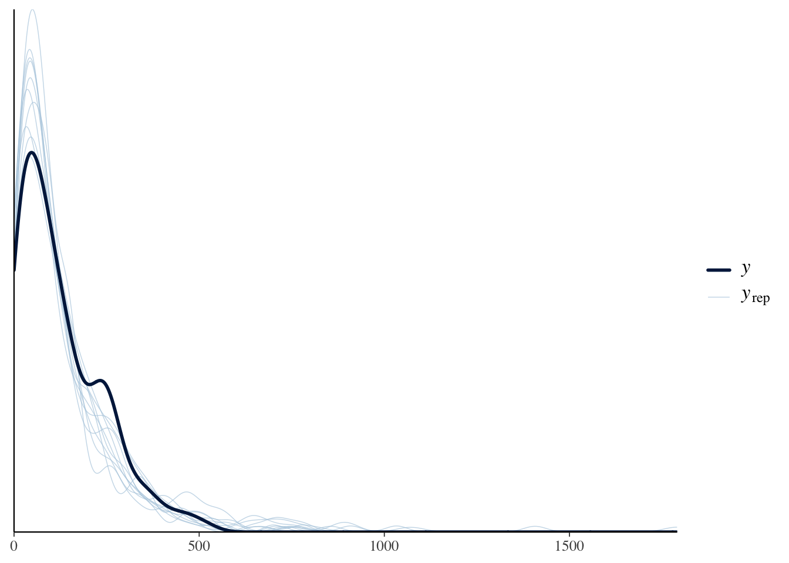
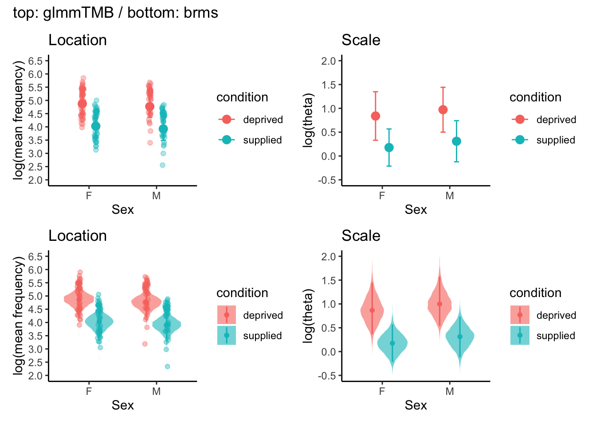

This dataset comes from Mizuno and Soma (2023), which investigates the visual preferences of estrildid finches. The study measured how often birds gazed at different visual stimuli (white dots vs. white stripes) under two conditions: food-deprived and food-supplied. The research originally tested the sensory bias hypothesis, which suggests that a pre-existing preference for whitish, round objects (like seeds) may have influenced the evolution of plumage patterns.
Here, to keep things simple, we use only a subset of the data related to the white dot pattern stimulus. We analyse how gaze frequency toward dot stimuli differs between the two conditions (food-deprived vs. food-supplied), using a location-scale model with a negative binomial distribution.
Although this model includes two random effects (individual and species), it follows the same basic structure as Model 2 - the only difference is that we use a non-Gaussian distribution (negative binomial) instead of a Gaussian one.
5.0.1 Questions
Do birds gaze at dot patterns more (or less) when food-deprived compared to food-supplied?
Does the variability in gaze responses differ between conditions?
5.0.2 Variables included
The dataset contains the following variables:
species and phylo: The species of the bird (12 species).
id: The individual bird’s ID.
sex: Male or female.
condition: The condition under which the data was collected (food-deprived or food-supplied).
frequency: The total frequency of gazes towards the stimulus over a 1-hour period.
First, we visualise the data to understand how gaze frequency varies by condition and species.
set.seed(42)# load the dataset ----dat_pref<-read.csv(here("data", "AM_preference.csv"), header =TRUE)dat_pref<-dat_pref%>%dplyr::select(-stripe, -full, -subset)%>%rename(frequency =dot)%>%mutate(species =phylo, across(c(condition, sex), as.factor))ggplot(dat_pref, aes(x =condition, y =frequency))+geom_violin(color ="#8B8B83", fill ="white", width =1.2, alpha =0.3)+geom_jitter(aes(shape =sex, color =sex), size =3, alpha =0.8, width =0.15, height =0)+labs( title ="Total frequency of gazes towards dot patterns", x ="Condition", y ="Total frequency of gazes (1hr)")+scale_shape_manual(values =c("M"=17, "F"=16), labels =c("M"="Male", "F"="Female"))+scale_color_manual(values =c("M"="#009ACD", "F"="#FF4D4D"), labels =c("M"="Male", "F"="Female"))+theme_classic(base_size =16)+theme( axis.text =element_text(color ="#6E7B8B", size =14), axis.title =element_text(color ="#6E7B8B", size =14), legend.title =element_text(color ="#6E7B8B"), legend.text =element_text(color ="#6E7B8B"), legend.position ="right", axis.text.x =element_text(angle =45, hjust =1))
The plot breaks down the same gaze data by species. Each point is a bird’s gaze frequency under a condition. Colored lines represent species-specific means across conditions, helping to visualise - how different species vary in their average gazing behaviour, whether species respond differently to food deprivation. Faceting by species can help compare species-level patterns.
ggplot(dat_pref, aes(x =condition, y =frequency))+geom_point(alpha =0.5)+labs( title ="Total frequency of gazes towards dot patterns by species", x ="Condition", y ="Total frequency of gazes (1hr)")+stat_summary(fun =mean, geom ="line", aes(group =species, color =species))+theme_classic()+facet_wrap(~species)
5.2 Run models and interpret results
We fit and compare two types of models to analyse gaze frequency toward white dot patterns using the glmmTMB package:
Location-only model: Estimates how the mean gaze frequency varies between the two experimental conditions (food-deprived vs. food-supplied).
Location-scale model: Estimates how both the mean and the variability (dispersion) of gaze frequency vary between conditions.
These models help us examine whether internal states such as hunger (represented by food deprivation) influence not only the average number of gazes, but also the species/individual variability in gaze behaviour. Such variability may reflect differences in exploratory tendencies among species/individuals. Please note that in this section, species are not modelled with phylogenetic relatedness. For an example of how to fit a location–scale phylogenetic regression model, see Section Model selection (example 2).
We use negative binomial model here, as the response variable frequency is a count of gazes and may exhibit overdispersion. In The glmmTMB package, we can specify the family as nbinom2 for negative binomial distribution with a log link function.
# location model ----## the mean (location) of gaze frequency with condition and sex as fixed effects; assumes constant variance.model_0<-glmmTMB(frequency~1+condition+sex+(1|species)+(1|id), # location part (mean) data =dat_pref, family =nbinom2(link ="log"))summary(model_0)
Family: nbinom2 ( log )
Formula: frequency ~ 1 + condition + sex + (1 | species) + (1 | id)
Data: dat_pref
AIC BIC logLik deviance df.resid
2176.3 2195.8 -1082.2 2164.3 184
Random effects:
Conditional model:
Groups Name Variance Std.Dev.
species (Intercept) 0.3725 0.6103
id (Intercept) 0.1353 0.3679
Number of obs: 190, groups: species, 12; id, 95
Dispersion parameter for nbinom2 family (): 1.72
Conditional model:
Estimate Std. Error z value Pr(>|z|)
(Intercept) 4.84086 0.22151 21.854 < 2e-16 ***
conditionsupplied -0.92168 0.12080 -7.630 2.36e-14 ***
sexM -0.06673 0.14422 -0.463 0.644
---
Signif. codes: 0 '***' 0.001 '**' 0.01 '*' 0.05 '.' 0.1 ' ' 1
For Gaussian models, we can use the Q-Q plot to show whether the residuals fall along a straight line. However, for non-Gaussian models, we can use the DHARMa package to check the residuals. The DHARMa package provides a set of diagnostic tools for generalized linear mixed models (GLMMs) and allows us to simulate residuals and check for overdispersion, outliers, and uniformity.
# location-only model (NB) ----# main diagnostic plotsmodel0_res<-simulateResiduals(model_0, plot =TRUE, seed =42)
# formal test for over/underdispersiontestDispersion(model0_res)
DHARMa nonparametric dispersion test via sd of residuals fitted vs.
simulated
data: simulationOutput
dispersion = 0.45606, p-value = 0.456
alternative hypothesis: two.sided
The DHARMa diagnostics indicate no issues with overdispersion or outliers (Dispersion test: p = 0.456; Outlier test: p = 0.88). However, the KS test for uniformity is significant (p = 2e-05), suggesting deviation from the expected residual distribution. Additionally, residuals show non-uniform patterns across levels of the categorical predictor (catPred), and the Levene’s test indicates heterogeneity of variance among groups. These results suggest that the model may not fully capture the structure associated with the categorical predictor.
The result fromDHARMa diagnostics suggests that the location-only model may not fully capture the structure of the data. Therefore, we can fit a location-scale model to account for both the mean and variance of the response variable.
# location-scale model ---- # both the mean (location) and the variance (scale) as functions of condition and sex.model_1<-glmmTMB(frequency~1+condition+sex+(1|species)+(1|id), dispformula =~condition+sex, data =dat_pref, family =nbinom2(link ="log"))summary(model_1)
Let’s compare the two models to see if the location-scale model provides a better fit to the data than the location-only model.
# compare models ----model.sel(model_0, model_1)
You can quickly check the results of the location-only model (model 0) and the location-scale model (model 1) below.
Location-only model
Term
Estimate
Std. Error
95% CI (low)
95% CI (high)
(Intercept)
4.841
0.222
4.407
5.275
conditionsupplied
−0.922
0.121
−1.158
−0.685
sexM
−0.067
0.144
−0.349
0.216
Location-scale model (location part)
Term
Estimate
Std. Error
95% CI (low)
95% CI (high)
(Intercept)
4.874
0.204
4.473
5.274
conditionsupplied
−0.845
0.121
−1.081
−0.609
sexM
−0.104
0.137
−0.373
0.165
Location-scale model (dispersion part)
Term
Estimate
Std. Error
95% CI (low)
95% CI (high)
(Intercept)
0.839
0.260
0.330
1.349
conditionsupplied
−0.662
0.248
−1.148
−0.175
sexM
0.132
0.249
−0.355
0.619
The Conway-Maxwell-Poisson (CMP) model is a flexible count data model that can handle overdispersion and underdispersion.
# CMP model ----model_2<-glmmTMB(frequency~1+condition+sex+(1|species)+(1|id), dispformula =~condition+sex, data =dat_pref, family =compois(link ="log"))summary(model_2)confint(model_2)model.sel(model_0, model_1, model_2)
Here, we compared three generalised linear mixed models. model_0 was a Negative Binomial (NB) model with a single, overall estimated dispersion parameter (i.e., not modelled as a function of predictors). model_1 extended this by modelling the NB dispersion parameter as a function of condition and sex. model_2 further used a Conway-Maxwell-Poisson (CMP) distribution, which can accommodate both under- and over-dispersion, with its dispersion parameter similarly modelled by condition and sex.
Model comparison based on AICc strongly favored the location-scale CMP model (model_2: AICc = 2159.2, model weight = 0.999), with the location-scale NB model (model_1: AICc = 2172.8) and the NB model with a single dispersion parameter (model_0: AICc = 2176.8) performing substantially worse.
In all three models, food-supplied birds showed significantly lower gaze frequencies toward dot stimuli. There was no evidence of sex differences in the location part in any model.
Regarding the dispersion parameter, in the location-scale NB model (model_1), the dispersion part revealed a significant change in residual variance in the food-supplied condition (\(\beta_{[\text{conditionSupplied}]}^{(l)}\) = –0.662). Given the parameterisation of the Negative Binomial distribution (where a smaller dispersion parameter \(\theta\) indicates greater overdispersion), this suggests an increase in overdispersion when food was supplied, implying less consistent behaviour across individuals. However, this effect was not statistically significant in the location-scale CMP model (model_2), where the corresponding estimate was 1.20 (p = 0.12). In the CMP model, a positive estimate for the dispersion parameter \(\nu\) would imply a decrease in overdispersion (i.e., more consistent behavior) if it were significant.
Random effects in all models consistently showed greater variance among species than among id within species. For example, in the location-scale CMP model, species-level variance was 0.246, while individual-level variance was 0.151.
5.2.2 Comparing Negative Binomial and CMP Models
Below, we compare the Negative Binomial (NB) and Conway-Maxwell-Poisson (CMP) models to assess which better fits the data. Model selection is based on AICc and residual diagnostics.
Model comparison of location-only and location-scale models in negative Binomial (NB) and Conway-Maxwell-Poisson (CMP) distributions.
All models passed the DHARMa dispersion and outlier tests, indicating appropriate handling of overall variance and absence of extreme observations. However, the Kolmogorov–Smirnov (KS) test consistently revealed significant deviations from the expected uniform distribution of residuals in all three cases, suggesting remaining misfits in distributional shape. The location-scale CMP model performed best in terms of within-group residual uniformity, showing no significant deviation in any predictor level. In contrast, both the location-only NB model and the location-scale NB model exhibited within-group deviations in some categories. These results collectively suggest that while none of the models perfectly capture the residual structure, the location-scale CMP model may offer the best overall fit among the candidates for the observed data characteristics.
You can also fit the location-scale model using the brms package. The difference is that in brms, you can specify scale parts using shape. Below, we show how to fit the same location-scale negative binomial model as above using brms.
formula1<-bf(frequency~1+condition+sex+(1|species)+(1|id),shape~1+condition+sex)prior1<-default_prior(formula1, data =dat_pref, family =negbinomial(link ="log", link_shape ="log"))system.time(model_nb_brms<-brm(formula1, data =dat_pref, prior =prior1, chains =2, iter =5000, warmup =3000, thin =1, family =negbinomial(link ="log", link_shape ="log"),# control = list(adapt_delta = 0.95)))summary(model_nb_brms)
Family: negbinomial
Links: mu = log; shape = log
Formula: frequency ~ condition + sex + (1 | species) + (1 | id)
shape ~ condition + sex
Data: dat_pref (Number of observations: 190)
Draws: 2 chains, each with iter = 5000; warmup = 3000; thin = 1;
total post-warmup draws = 4000
Multilevel Hyperparameters:
~id (Number of levels: 95)
Estimate Est.Error l-95% CI u-95% CI Rhat Bulk_ESS Tail_ESS
sd(Intercept) 0.38 0.13 0.08 0.60 1.00 482 563
~species (Number of levels: 12)
Estimate Est.Error l-95% CI u-95% CI Rhat Bulk_ESS Tail_ESS
sd(Intercept) 0.69 0.23 0.36 1.24 1.00 978 1816
Regression Coefficients:
Estimate Est.Error l-95% CI u-95% CI Rhat Bulk_ESS
Intercept 4.85 0.25 4.35 5.34 1.00 1044
shape_Intercept 0.87 0.28 0.36 1.45 1.00 966
conditionsupplied -0.84 0.12 -1.09 -0.60 1.00 4843
sexM -0.11 0.14 -0.40 0.17 1.00 3632
shape_conditionsupplied -0.70 0.28 -1.29 -0.19 1.00 2044
shape_sexM 0.14 0.25 -0.35 0.61 1.00 4208
Tail_ESS
Intercept 1637
shape_Intercept 1938
conditionsupplied 3049
sexM 3220
shape_conditionsupplied 1777
shape_sexM 2673
Draws were sampled using sampling(NUTS). For each parameter, Bulk_ESS
and Tail_ESS are effective sample size measures, and Rhat is the potential
scale reduction factor on split chains (at convergence, Rhat = 1).

Posterior predictive checks indicated that the negative binomial location–scale model adequately captured the central tendency of gaze frequencies. However, the model slightly underestimated the heaviness of the right tail, suggesting that a small number of extreme observations were not fully reproduced.
Note that we can also conduct the CMP model in brms using the family = brmsfamily("com_poisson") family, but it is still at an experimental stage and may not work well, so we recommend the glmmTMB package for CMP models for now…

Location part: Points and error bars indicate the estimated log(mean frequency) for each combination of feeding condition and sex. For glmmTMB, values are estimated marginal means (on the log scale) with 95% confidence intervals. For brms, values are posterior medians with 95% credible intervals. In addition, the brms panels include violin plots, which visualise the full posterior distributions of the estimates. Faint dots represent model-based predictions of log(mean frequency) for individual observations (i.e. fitted values including random effects), shown to illustrate how the model maps observed data points onto the underlying mean structure.
Scale part: Points and error bars show the estimated log(theta), the dispersion (shape) parameter of the negative binomial distribution, for each condition–sex cell. Because theta is a distributional parameter rather than an observed variable, there are no fitted or raw data points that can be plotted at the observation level. In the brms panels, violin plots again illustrate the posterior distributions for log(theta), while points and intervals indicate the posterior median and 95% credible interval.
5.2.3 Comparison of location-only model and location-scale model
Modeling dispersion improves model fit and better captures the structure of the data.
Location-scale model had a lower AICc (2172.8) than location-only model (2176.8), indicating better model fit. It also had a higher model weight (0.877 vs. 0.123), suggesting stronger support for the location-scale model.
5.2.4 Interpretation of location-scale model :
5.2.4.1 How to back-transflrm the log-link scale to natural scale?
The location part uses a log link, so estimates are on the log(mean frequency) scale. To obtain the expected mean frequency on the natural scale, simply exponentiate the estimate.
The dispersion part also uses a log link, so estimates are on the log(theta) scale. To get theta on the natural scale, exponentiate the estimate.
5.2.4.2 Biological meanings:
Location (mean) part:
Birds gazed significantly less at dots when food was supplied (\(\beta^{(l)}_{\text{deprived–supplied}} = -0.85\), 95% CI -1.08, -0.61), corresponding to a rate ratio of \(\exp(\beta^{(l)}) = 0.43\) (i.e., mean frequency reduced by 57.3%; CI −66.0% to −45.7%).
There is no significant sex difference in mean gaze frequency (\(\beta_{[\text{sex-male}]}^{(l)}\) = -0.104, 95% CI [-0.37, 0.16]$).
Scale (dispersion) part:
The supplied condition significantly reduced the precision parameter (\(\beta^{(s)}_{\text{deprived–supplied}}=-0.66\), 95% CI -1.15, -0.18), giving a \(\theta\)-ratio of \(\exp(\beta^{(s)})=0.52\) (i.e., 48.3% lower precision; CI −68.3% to −16.5%). Because lower \(\theta\) implies more scatter than the Poisson expectation, this means individual gaze behaviour was more variable when food was supplied.
There was no significant sex difference in the variability of gaze frequency (\(\beta^{(s)}_{\text{sex-male}}=0.13\), 95% CI -0.36, 0.62).
Individual-level variation (\(sd^{(l)}_{\text{id}}=0.34\), 95% CI 0.17, 0.68) was present but smaller than species-level differences.
5.3 Conclusion
Q1: Do birds gaze at dot patterns more (or less) when food-deprived compared to food-supplied?
Answer: Yes. The average gaze frequency is lower when food is supplied.
Q2: Does the variability in gaze responses differ between conditions?
Answer: Yes. Birds showed more consistent gaze responses when food was deprived, and more varied responses when food was available.
Source Code
---title: "Beyond Gaussian 1"---```{r}#| label: load_packages#| echo: false# Load required packagespacman::p_load(## data manipulation dplyr, tibble, tidyverse, broom, broom.mixed,## model fitting ape, arm, brms, broom.mixed, cmdstanr, emmeans, glmmTMB, MASS, phytools, rstan, TreeTools,## model checking and evaluation DHARMa, loo, MuMIn, parallel,## visualisation bayesplot, ggplot2, patchwork, tidybayes,## reporting and utilities gt, here, kableExtra, knitr)```This dataset comes from [Mizuno and Soma (2023)](https://doi.org/10.1098/rsos.231057), which investigates the visual preferences of estrildid finches. The study measured how often birds gazed at different visual stimuli (white dots vs. white stripes) under two conditions: food-deprived and food-supplied. The research originally tested the sensory bias hypothesis, which suggests that a pre-existing preference for whitish, round objects (like seeds) may have influenced the evolution of plumage patterns.Here, to keep things simple, we use only a subset of the data related to the white dot pattern stimulus. We analyse how gaze frequency toward dot stimuli differs between the two conditions (food-deprived vs. food-supplied), using a location-scale model with a negative binomial distribution.Although this model includes two random effects (individual and species), it follows the same basic structure as Model 2 - the only difference is that we use a non-Gaussian distribution (negative binomial) instead of a Gaussian one.### Questions1. **Do birds gaze at dot patterns more (or less) when food-deprived compared to food-supplied?**2. **Does the variability in gaze responses differ between conditions?**### Variables includedThe dataset contains the following variables:::: {.callout-note appearance="simple" icon="false"}- `species` and `phylo`: The species of the bird (12 species).- `id`: The individual bird's ID.- `sex`: Male or female.- `condition`: The condition under which the data was collected (food-deprived or food-supplied).- `frequency`: The total frequency of gazes towards the stimulus over a 1-hour period.- `p_dot`: Having plumage dot patterns or not.- `termite`: The presence of termite-eating diet.:::## Visualise the datasets::: panel-tabset## ConditionFirst, we visualise the data to understand how gaze frequency varies by condition and species.```{r}#| label: show_data#| fig-width: 8#| fig-height: 6set.seed(42) # load the dataset ----dat_pref <-read.csv(here("data", "AM_preference.csv"), header =TRUE)dat_pref <- dat_pref %>% dplyr::select(-stripe, -full, -subset) %>%rename(frequency = dot) %>%mutate(species = phylo, across(c(condition, sex), as.factor))ggplot(dat_pref, aes(x = condition,y = frequency)) +geom_violin(color ="#8B8B83", fill ="white",width =1.2, alpha =0.3) +geom_jitter(aes(shape = sex, color = sex),size =3, alpha =0.8,width =0.15, height =0) +labs(title ="Total frequency of gazes towards dot patterns",x ="Condition",y ="Total frequency of gazes (1hr)" ) +scale_shape_manual(values =c("M"=17, "F"=16),labels =c("M"="Male", "F"="Female")) +scale_color_manual(values =c("M"="#009ACD", "F"="#FF4D4D"),labels =c("M"="Male", "F"="Female")) +theme_classic(base_size =16) +theme(axis.text =element_text(color ="#6E7B8B", size =14),axis.title =element_text(color ="#6E7B8B", size =14),legend.title =element_text(color ="#6E7B8B"),legend.text =element_text(color ="#6E7B8B"),legend.position ="right",axis.text.x =element_text(angle =45, hjust =1) )```## SpeciesThe plot breaks down the same gaze data by species. Each point is a bird’s gaze frequency under a condition. Colored lines represent species-specific means across conditions, helping to visualise - how different species vary in their average gazing behaviour, whether species respond differently to food deprivation. Faceting by species can help compare species-level patterns.```{r}#| label: show_data2#| fig-width: 8#| fig-height: 6ggplot(dat_pref, aes(x = condition, y = frequency)) +geom_point(alpha =0.5) +labs(title ="Total frequency of gazes towards dot patterns by species",x ="Condition",y ="Total frequency of gazes (1hr)" ) +stat_summary(fun = mean, geom ="line", aes(group = species, color = species)) +theme_classic() +facet_wrap(~ species)```:::## Run models and interpret resultsWe fit and compare two types of models to analyse gaze frequency toward white dot patterns using the `glmmTMB` package:- Location-only model: Estimates how the mean gaze frequency varies between the two experimental conditions (`food-deprived` vs. `food-supplied`).- Location-scale model: Estimates how both the mean and the variability (`dispersion`) of gaze frequency vary between conditions.These models help us examine whether internal states such as hunger (represented by food deprivation) influence not only the average number of gazes, but also the species/individual variability in gaze behaviour. Such variability may reflect differences in exploratory tendencies among species/individuals. Please note that in this section, species are not modelled with phylogenetic relatedness. For an example of how to fit a location–scale phylogenetic regression model, see *Section Model selection (example 2)*.### Model fitting::: panel-tabset## Location modelWe use negative binomial model here, as the response variable `frequency` is a count of gazes and may exhibit overdispersion. In The `glmmTMB` package, we can specify the family as `nbinom2` for negative binomial distribution with a log link function.```{r}#| label: model_fitting1 - nb model# location model ----## the mean (location) of gaze frequency with condition and sex as fixed effects; assumes constant variance.model_0 <-glmmTMB( frequency ~1+ condition + sex + (1| species) + (1| id), # location part (mean)data = dat_pref,family =nbinom2(link ="log"))summary(model_0)confint(model_0)```## Residual diagnosticsFor Gaussian models, we can use the Q-Q plot to show whether the residuals fall along a straight line. However, for non-Gaussian models, we can use the `DHARMa` package to check the residuals. The `DHARMa` package provides a set of diagnostic tools for generalized linear mixed models (GLMMs) and allows us to simulate residuals and check for overdispersion, outliers, and uniformity.```{r}#| label: residual_diagnostics - nb model# location-only model (NB) ----# main diagnostic plotsmodel0_res <-simulateResiduals(model_0, plot =TRUE, seed =42)# formal test for over/underdispersiontestDispersion(model0_res) ```The `DHARMa` diagnostics indicate no issues with overdispersion or outliers (Dispersion test: `p = 0.456`; Outlier test: `p = 0.88`). However, the KS test for uniformity is significant (`p = 2e-05`), suggesting deviation from the expected residual distribution. Additionally, residuals show non-uniform patterns across levels of the categorical predictor (catPred), and the Levene’s test indicates heterogeneity of variance among groups. These results suggest that the model may not fully capture the structure associated with the categorical predictor.## Location-scale modelThe result from`DHARMa` diagnostics suggests that the location-only model may not fully capture the structure of the data. Therefore, we can fit a location-scale model to account for both the mean and variance of the response variable.```{r}#| label: model_fitting 2 - nb model# location-scale model ---- # both the mean (location) and the variance (scale) as functions of condition and sex.model_1 <-glmmTMB( frequency ~1+ condition + sex + (1| species) + (1| id),dispformula =~ condition + sex, data = dat_pref, family =nbinom2(link ="log"))summary(model_1)confint(model_1)```## Model comparisonLet's compare the two models to see if the location-scale model provides a better fit to the data than the location-only model.```{r}#| label: model_comparison - nb model# compare models ----model.sel(model_0, model_1)```## Summary of model resultsYou can quickly check the results of the location-only model (model 0) and the location-scale model (model 1) below.```{r}#| echo: false#| label: model0_results - nb model# Location-only model (Model 0) ----coefs_0 <-summary(model_0)$coefficients$condconf_0 <-confint(model_0)rownames(conf_0) <-gsub("^cond\\.", "", rownames(conf_0))conf_0 <- conf_0[rownames(conf_0) %in%rownames(coefs_0), ]match_0 <-match(rownames(coefs_0), rownames(conf_0))results_0 <-data.frame(Term =rownames(coefs_0),Estimate = coefs_0[, "Estimate"],StdError = coefs_0[, "Std. Error"],`2.5%`= conf_0[match_0, "2.5 %"],`97.5%`= conf_0[match_0, "97.5 %"])colnames(results_0)[which(names(results_0) =="X2.5.")] <-"CI_low"colnames(results_0)[which(names(results_0) =="X97.5.")] <-"CI_high"gt(results_0) %>%tab_header(title ="Location-only model") %>%fmt_number(columns =everything(), decimals =3) %>%cols_label(Term ="Term",Estimate ="Estimate",StdError ="Std. Error",CI_low ="95% CI (low)",CI_high ="95% CI (high)" ) %>%cols_align(align ="center", columns =everything())``````{r}#| echo: false#| label: model1_results - nb model# Location-scale model (Model 1) ----summary_1 <-summary(model_1)conf_1 <-confint(model_1)## location part ----coefs_1_loc <- summary_1$coefficients$condconf_1_loc <- conf_1[grep("^cond", rownames(conf_1)), ]rownames(conf_1_loc) <-gsub("^cond\\.", "", rownames(conf_1_loc))conf_1_loc <- conf_1_loc[rownames(conf_1_loc) %in%rownames(coefs_1_loc), ]match_loc <-match(rownames(coefs_1_loc), rownames(conf_1_loc))results_1_loc <-data.frame(Term =rownames(coefs_1_loc),Estimate = coefs_1_loc[, "Estimate"],StdError = coefs_1_loc[, "Std. Error"],CI_low = conf_1_loc[match_loc, "2.5 %"],CI_high = conf_1_loc[match_loc, "97.5 %"])colnames(results_1_loc)[which(names(results_1_loc) =="X2.5.")] <-"CI_low"colnames(results_1_loc)[which(names(results_1_loc) =="X97.5.")] <-"CI_high"## dispersion part ----coefs_1_disp <- summary_1$coefficients$dispconf_1_disp <- conf_1[grep("^disp", rownames(conf_1)), ]rownames(conf_1_disp) <-gsub("^disp\\.", "", rownames(conf_1_disp))conf_1_disp <- conf_1_disp[rownames(conf_1_disp) %in%rownames(coefs_1_disp), ]match_disp <-match(rownames(coefs_1_disp), rownames(conf_1_disp))results_1_disp <-data.frame(Term =rownames(coefs_1_disp),Estimate = coefs_1_disp[, "Estimate"],StdError = coefs_1_disp[, "Std. Error"],CI_low = conf_1_disp[match_disp, "2.5 %"],CI_high = conf_1_disp[match_disp, "97.5 %"])colnames(results_1_loc)[which(names(results_1_disp) =="X2.5.")] <-"CI_low"colnames(results_1_loc)[which(names(results_1_disp) =="X97.5.")] <-"CI_high"# display results ----gt(results_1_loc) %>%tab_header(title ="Location-scale model (location part)") %>%fmt_number(columns =everything(), decimals =3) %>%cols_label(Term ="Term",Estimate ="Estimate",StdError ="Std. Error",CI_low ="95% CI (low)",CI_high ="95% CI (high)" ) %>%cols_align(align ="center", columns =everything())gt(results_1_disp) %>%tab_header(title ="Location-scale model (dispersion part)") %>%fmt_number(columns =everything(), decimals =3) %>%cols_label(Term ="Term",Estimate ="Estimate",StdError ="Std. Error",CI_low ="95% CI (low)",CI_high ="95% CI (high)" ) %>%cols_align(align ="center", columns =everything())```## Bonus 1 - Conway-Maxwell-Poisson (CMP) modelThe `Conway-Maxwell-Poisson (CMP)` model is a flexible count data model that can handle overdispersion **and** underdispersion.```{r}#| label: model fitting 3 - cmp_model#| eval: false# CMP model ----model_2 <-glmmTMB( frequency ~1+ condition + sex + (1| species) + (1| id),dispformula =~ condition + sex, data = dat_pref,family =compois(link ="log"))summary(model_2)confint(model_2)model.sel(model_0, model_1, model_2)``````{r}#| label: model result 3 - cmp_model#| echo: falsemodel_2 <-readRDS(here("Rdata", "model_CMP_AM.rds"))summary(model_2)confint(model_2)model.sel(model_0, model_1, model_2)```Here, we compared three generalised linear mixed models. **model_0** was a `Negative Binomial (NB)` model with a single, overall estimated dispersion parameter (i.e., not modelled as a function of predictors). **model_1** extended this by modelling the `NB` dispersion parameter as a function of condition and sex. **model_2** further used a `Conway-Maxwell-Poisson (CMP)` distribution, which can accommodate both under- and over-dispersion, with its dispersion parameter similarly modelled by condition and sex.Model comparison based on AICc strongly favored the location-scale CMP model (model_2: AICc = 2159.2, model weight = 0.999), with the location-scale NB model (model_1: AICc = 2172.8) and the NB model with a single dispersion parameter (model_0: AICc = 2176.8) performing substantially worse.In all three models, food-supplied birds showed significantly lower gaze frequencies toward dot stimuli. There was no evidence of sex differences in the location part in any model.Regarding the dispersion parameter, in the location-scale `NB` model (model_1), the dispersion part revealed a significant change in residual variance in the food-supplied condition ($\beta_{[\text{conditionSupplied}]}^{(l)}$ = –0.662). Given the parameterisation of the Negative Binomial distribution (where a smaller dispersion parameter $\theta$ indicates greater overdispersion), this suggests an increase in overdispersion when food was supplied, implying less consistent behaviour across individuals. However, this effect was not statistically significant in the location-scale `CMP` model (model_2), where the corresponding estimate was 1.20 (p = 0.12). In the `CMP` model, a positive estimate for the dispersion parameter $\nu$ would imply a decrease in overdispersion (i.e., more consistent behavior) if it were significant.Random effects in all models consistently showed greater variance among species than among id within species. For example, in the location-scale CMP model, species-level variance was 0.246, while individual-level variance was 0.151.### Comparing Negative Binomial and CMP ModelsBelow, we compare the Negative Binomial (NB) and Conway-Maxwell-Poisson (CMP) models to assess which better fits the data. Model selection is based on AICc and residual diagnostics.```{r}#| label: model_comparison 2#| echo: false#| fig-cap: "Model comparison of location-only and location-scale models in negative Binomial (NB) and Conway-Maxwell-Poisson (CMP) distributions."#| fig-subcap: #| - location-only model (NB) #| - location-scale model (NB)#| - location-scale model (CMP)#| layout-ncol: 3#| column: page#| eval: falsemodel0_res <-simulateResiduals(model_0, plot =TRUE)model1_res <-simulateResiduals(model_1, plot =TRUE)model2_res <-simulateResiduals(model_2, plot =TRUE)```All models passed the `DHARMa` dispersion and outlier tests, indicating appropriate handling of overall variance and absence of extreme observations. However, the Kolmogorov–Smirnov (KS) test consistently revealed significant deviations from the expected uniform distribution of residuals in all three cases, suggesting remaining misfits in distributional shape. The location-scale `CMP` model performed best in terms of within-group residual uniformity, showing no significant deviation in any predictor level. In contrast, both the location-only `NB` model and the location-scale `NB` model exhibited within-group deviations in some categories. These results collectively suggest that while none of the models perfectly capture the residual structure, the location-scale `CMP` model may offer the best overall fit among the candidates for the observed data characteristics.## Bonus 2 - brmsYou can also fit the location-scale model using the `brms` package. The difference is that in `brms`, you can specify scale parts using `shape`. Below, we show how to fit the same location-scale negative binomial model as above using `brms`.```{r}#| label: model_fitting3 - brms model1 (nb)#| eval: falseformula1 <-bf( frequency ~1+ condition + sex + (1| species) + (1| id), shape ~1+ condition + sex)prior1 <-default_prior(formula1, data = dat_pref, family =negbinomial(link ="log", link_shape ="log"))system.time(model_nb_brms <-brm(formula1, data = dat_pref, prior = prior1,chains =2, iter =5000, warmup =3000,thin =1,family =negbinomial(link ="log", link_shape ="log"),# control = list(adapt_delta = 0.95)))summary(model_nb_brms)``````{r}#| label: model_nb_results#| echo: falsemodel_nb_brms <-readRDS(here("Rdata", "model_nb_AM.rds"))summary(model_nb_brms)pp_check(model_nb_brms)```Posterior predictive checks indicated that the negative binomial location–scale model adequately captured the central tendency of gaze frequencies. However, the model slightly underestimated the heaviness of the right tail, suggesting that a small number of extreme observations were not fully reproduced.Note that we can also conduct the CMP model in `brms` using the `family = brmsfamily("com_poisson")` family, but it is still at an experimental stage and may not work well, so we recommend the `glmmTMB` package for CMP models for now...## Result figures```{r}#| label: result_figure_nb#| echo: false# TODO: change colours and maybe set figure size# glmmTMB ----# Location partemm_mu_link <-emmeans(model_1, ~ condition * sex,component ="cond", type ="link") # return log(mu)head(as.data.frame(emm_mu_link)) # condition sex emmean SE df asymp.LCL asymp.UCL# deprived F 4.873695 0.2041941 Inf 4.473482 5.273908# supplied F 4.028497 0.2231513 Inf 3.591129 4.465866# deprived M 4.769738 0.2079726 Inf 4.362120 5.177357# supplied M 3.924540 0.2228790 Inf 3.487705 4.361375# # Results are given on the log (not the response) scale. # Confidence level used: 0.95 df_mu_link <-as.data.frame(emm_mu_link) %>%rename(mean_log = emmean, # estimated log(mean frequency)lwr = asymp.LCL, # lower 95% CI on log scaleupr = asymp.UCL # upper 95% CI on log scale )# Scale partemm_disp_link <-emmeans(model_1, ~ condition * sex,component ="disp", type ="link") # return log(θ)df_disp_link <-as.data.frame(emm_disp_link) %>%rename(log_theta = emmean, # estimated log(dispersion parameter theta)lwr = asymp.LCL, # lower 95% CI on log scaleupr = asymp.UCL # upper 95% CI on log scale )pos <-position_dodge(width =0.4)# Plot location (mean, on log scale)p_mu_link <-ggplot(df_mu_link, aes(x = sex, y = mean_log, color = condition)) +geom_point(position = pos, size =3) +geom_errorbar(aes(ymin = lwr, ymax = upr), position = pos, width =0.15) +labs(title ="Location",x ="Sex", y ="log(mean frequency)"# log scale ) +scale_y_continuous(limits =c(2.0, 6.5), breaks =seq(2.0, 6.5, by =0.5) ) +theme_classic()# p_mu_link_raw <- p_mu_link +# geom_point(# data = dat_pref,# aes(x = sex, y = log(frequency), color = condition),# position = position_jitterdodge(dodge.width = 0.4, jitter.width = 0.08),# alpha = 0.35, size = 1.6, inherit.aes = FALSE# )dat_pref$pred_logmu <-predict(model_1, type ="link", re.form =NULL)p_mu_link_predObs <- p_mu_link +geom_point(data = dat_pref,aes(x = sex, y = pred_logmu, color = condition),position =position_jitterdodge(dodge.width =0.4, jitter.width =0.08),alpha =0.35, size =1.6, inherit.aes =FALSE )# Plot dispersion (theta, on log scale)p_disp_link <-ggplot(df_disp_link, aes(x = sex, y = log_theta, color = condition)) +geom_point(position = pos, size =3) +geom_errorbar(aes(ymin = lwr, ymax = upr), position = pos, width =0.15) +labs(title ="Scale",x ="Sex", y ="log(theta)"# log scale ) +scale_y_continuous(limits =c(-0.5, 2.0), breaks =seq(-0.5, 2.0, by =0.5) ) +theme_classic()p_glmmTMB_nb <- p_mu_link_predObs + p_disp_link# brms ----# Create a grid of predictor values for posterior distributionsnd <- tidyr::expand_grid(condition =levels(dat_pref$condition),sex =levels(dat_pref$sex))# Get posterior draws for mu and shape and reshape the datadraws_link <- tidybayes::linpred_draws( model_nb_brms, newdata = nd, re_formula =NA, dpar =TRUE) %>%transmute( sex, condition, .draw,log_mu = mu,log_theta = shape ) %>% tidyr::pivot_longer(cols =c(log_mu, log_theta), names_to ="parameter", values_to ="value" )# Get the posterior median of the linear predictor for each observationpred_obs <-add_linpred_draws(newdata = dat_pref, # Use the original data hereobject = model_nb_brms,dpar ="mu",re_formula =NULL# Include group-level effects for specific predictions ) %>%group_by(.row, condition, sex) %>%# .row is added by add_linpred_drawssummarise(predicted_logmu =median(.linpred), # Calculate the posterior median.groups ="drop" )# Create the plot for the Location parameter (mu) with predicted pointsp_loc <- draws_link %>%filter(parameter =="log_mu") %>%ggplot(aes(x = sex, y = value, fill = condition)) +geom_violin(width =0.9, trim =FALSE, alpha =0.6,color =NA, position =position_dodge(0.6) ) +stat_pointinterval(aes(color = condition),position =position_dodge(width =0.6),.width =0.95, size =0.8 ) +# Add the new layer for predicted data pointsgeom_point(data = pred_obs,aes(y = predicted_logmu, color = condition), # y-aesthetic is the predicted valueposition =position_jitterdodge(dodge.width =0.6, # Must match the dodge width abovejitter.width =0.1 ),alpha =0.4,size =1.5 ) +labs(title ="Location", x ="Sex", y ="log(mean frequency)" ) +scale_y_continuous(limits =c(2.0, 6.5), breaks =seq(2.0, 6.5, by =0.5)) +theme_classic() +theme(legend.position ="right")# Create the plot for the Scale parameter (shape)p_scl <- draws_link %>%filter(parameter =="log_theta") %>%ggplot(aes(x = sex, y = value, fill = condition)) +geom_violin(width =0.9, trim =FALSE, alpha =0.6,color =NA, position =position_dodge(0.6) ) +stat_pointinterval(aes(color = condition),position =position_dodge(width =0.6),.width =0.95, size =0.8 ) +labs(title ="Scale", x ="Sex", y ="log(theta)" ) +scale_y_continuous(limits =c(-0.5, 2.0), breaks =seq(-0.5, 2.0, by =0.5)) +theme_classic() +theme(legend.position ="right")p_brms_nb <- p_loc + p_scl# combine ----(p_glmmTMB_nb / p_brms_nb) +plot_annotation(title ="top: glmmTMB / bottom: brms")```- **Location part**: Points and error bars indicate the estimated log(mean frequency) for each combination of feeding condition and sex. For `glmmTMB`, values are estimated marginal means (on the log scale) with 95% confidence intervals. For `brms`, values are posterior medians with 95% credible intervals. In addition, the `brms` panels include violin plots, which visualise the full posterior distributions of the estimates. Faint dots represent model-based predictions of log(mean frequency) for individual observations (i.e. fitted values including random effects), shown to illustrate how the model maps observed data points onto the underlying mean structure.- **Scale part**: Points and error bars show the estimated log(theta), the dispersion (shape) parameter of the negative binomial distribution, for each condition–sex cell. Because theta is a distributional parameter rather than an observed variable, there are no fitted or raw data points that can be plotted at the observation level. In the `brms` panels, violin plots again illustrate the posterior distributions for log(theta), while points and intervals indicate the posterior median and 95% credible interval.:::### Comparison of location-only model and location-scale model- Modeling dispersion improves model fit and better captures the structure of the data.- Location-scale model had a lower AICc (2172.8) than location-only model (2176.8), indicating better model fit. It also had a higher model weight (0.877 vs. 0.123), suggesting stronger support for the location-scale model.### Interpretation of location-scale model :#### How to back-transflrm the log-link scale to natural scale?- The location part uses a log link, so estimates are on the log(mean frequency) scale. To obtain the expected mean frequency on the natural scale, simply exponentiate the estimate.- The dispersion part also uses a log link, so estimates are on the log(theta) scale. To get theta on the natural scale, exponentiate the estimate.#### Biological meanings:**Location (mean) part:**- Birds gazed significantly less at dots when food was supplied ($\beta^{(l)}_{\text{deprived–supplied}} = -0.85$, 95% CI -1.08, -0.61), corresponding to a rate ratio of $\exp(\beta^{(l)}) = 0.43$ (i.e., mean frequency reduced by 57.3%; CI −66.0% to −45.7%).- There is no significant sex difference in mean gaze frequency ($\beta_{[\text{sex-male}]}^{(l)}$ = -0.104, 95% CI \[-0.37, 0.16\]\$).**Scale (dispersion) part:**- The supplied condition significantly reduced the precision parameter ($\beta^{(s)}_{\text{deprived–supplied}}=-0.66$, 95% CI -1.15, -0.18), giving a $\theta$-ratio of $\exp(\beta^{(s)})=0.52$ (i.e., 48.3% lower precision; CI −68.3% to −16.5%). Because lower $\theta$ implies more scatter than the Poisson expectation, this means individual gaze behaviour was more variable when food was supplied.- There was no significant sex difference in the variability of gaze frequency ($\beta^{(s)}_{\text{sex-male}}=0.13$, 95% CI -0.36, 0.62).**Location (mean) random effects:**- Species-level variation ($sd^{(l)}_{\text{species}}=0.55$, 95% CI 0.31, 0.99) exceeded within-species individual variation.**Location (dispersion) random effects:**- Individual-level variation ($sd^{(l)}_{\text{id}}=0.34$, 95% CI 0.17, 0.68) was present but smaller than species-level differences.## Conclusion**Q1: Do birds gaze at dot patterns more (or less) when food-deprived compared to food-supplied?**Answer: Yes. The average gaze frequency is lower when food is supplied.**Q2: Does the variability in gaze responses differ between conditions?**Answer: Yes. Birds showed more consistent gaze responses when food was deprived, and more varied responses when food was available.